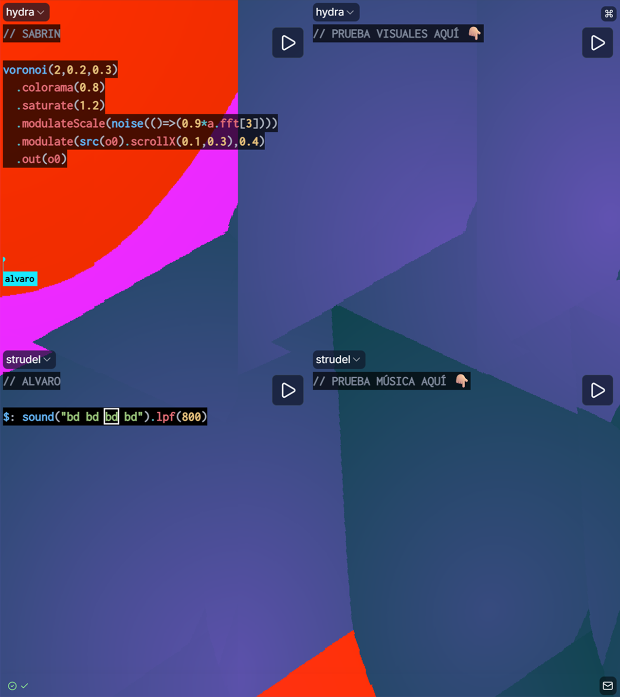

Más info a las 20:45 h! ⌛💻🎵🎨
¿Es tu primera vez haciendo live coding? ¿O programando? ¡No te preocupes! Aquí te enseñamos cómo hacer tus primeros sonidos y visuales con código 😉💻
$ Jam session
Para empezar a hacer música y visuales, únete a la sesión colaborativa que hemos creado pulsando el siguiente botón:
ÚneteCuando te unas a la sesión Flok verás 3 huecos o "slots". Hay un slot para PROBAR música y uno para visuales (compartido con Sabrin). Escoge uno y haz click en el panel para empezar a escribir!
$ Importante!
Para actualizar el código, pulsa el atajo de teclado Ctrl+Enter (Cmd+Intro en Mac)
$ Música
Primera melodía
$: n("0 1 2 3").scale("dorian").sound("piano").release(0.25)Añadamos otra melodía basada en la anterior, pero más alta (con add()):
$: n("0 1 2 4".add("4")).scale("dorian").sound("piano").release(0.25)Toca la segunda melodía al revés (con la función rev):
$: n("0 1 2 4".add("7"))
.rev()
.scale("dorian")
.sound("piano")
.release(0.25)Otra melodía:
$: n("{13 13 ~}%8")
.scale("dorian")
.sound("piano")
.release(0.25)Ritmo: platos
$: sound("hh*16").lpf(1800).gain("[0.3 0.2 0.45 0.2]*2")Cambia el número después de "hh" para cambiar la cantidad de notas de los platos!
Ritmo: kick
$: sound("bd bd bd bd").lpf(1100)Ritmo: caja
$: sound("~ sd").gain(0.7)Bajo
$: n("0*4").scale("dorian").transpose(-12).sound("sawtooth").lpf(3000)Prueba a cambiar el número dentro de n("...") para cambiar las notas del bajo y la melodía!
$ Visuales
Habla con Sabrin (visualista) para que te guíe con el código que ya tenemos!